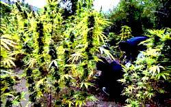

| La cannabiscultura floreix als boscos catalans - |
El Periódico
07/11/08 |
|
El cultiu de marihuana per a l'autoconsum sol anar associat a la imatge d'uns
testos discretament col.locats al balcó de casa perquè les plantes rebin llum.
No obstant, cada vegada proliferen més a Catalunya les plantacions de cànem situades
enmig de zones boscoses a les quals difícilment accedeix la policia. És el cas
de la plantació que apareix en aquestes fotografies, que van ser fetes a principis
d'octubre, en ple període de recol.lecció. |
Normalment
es tracta de plantacions autosuficients que disposen d'un regadiu propi i d'un
dipòsit en què s'emmagatzema l'aigua. Si la terra és adequada i proporciona a
les plantes els nutrients que requreixen, només és necessari atendre-les un cop
per setmana per aplicar-hi els tractaments per lluitar contra les plagues d'insectes,
fongs o altres malalties que puguin tenir. |
|  |
| foto: Arnau Bach |
| informació recollida a El Periòdico |
Tornar